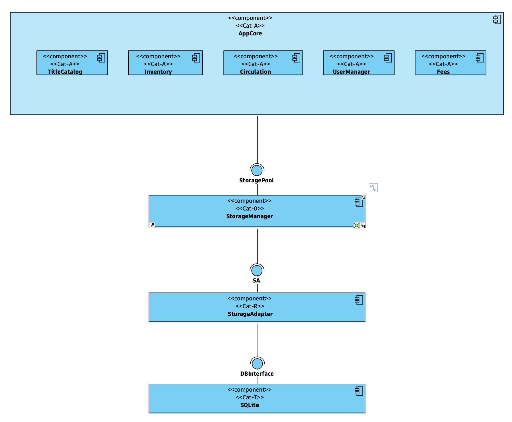

LiMa - A Library Manager
This is an information system for managing the typical processes of a library. It hast been built for educational purposes, in order to show and explain the principles of a software architecture which conforms to the concepts presented in:
- Johannes Siedersleben: Moderne Software-Architektur, dpunkt.verlag, 2004.
LiMa — ModuleLiMa - LibraryManager
An example application to show the principles of software architecture design.
Software Categories
The main idea of this book is, that the components of a software architecture can be categorized into the following classes:
- $0$-Software: This is software that is neither application specific nor does it know some technical APIs. Examples are container data types, basic algorithms for sorting and searching, math libraries etc.
- A-Software: Application software that implements the business logic and is independent of any technical APIs.
- T-Software: Technical software that knows at least one technical API (like ODBC, JSON)
A good and maintainable architecture should avoid AT-Software (i.e. a mixture of A- and T-software). In order to connect A-components and T-componentes, so-called R-Software should be used. That is software which translates from one Representation to another (i.e. from the business domain to the technical world and vice versa).
R-Software has in many cases a simple structure, so that it may be generated automatically based on some configuration data.
Current State
The software in this repo is a work in progress. It focuses currently on the subsystems
AppCore: the business logic (→ A-Software)StorageManager: a component responsible for storing and retrieving data; theStorageManageritself is a technology-neutral object manager [→ $0$-Software].- It is using a relational DBMS (SQLite in this case) for storing the objects; from the Julia-side
SQLite.jlandDBInterface.jlare used for access [→ T-Software] - In between there is a layer of R-Software (
StorageAdapter) to connect both worlds
StorageManagerwouldn‘t be a sub-package ofLiMa, but a stand-alone package which would be used byAppCore.- It is using a relational DBMS (SQLite in this case) for storing the objects; from the Julia-side

Business Logic in AppCore
The application core consists of the following components:
UserManagerTitleCatalogInventoryCirculationFees